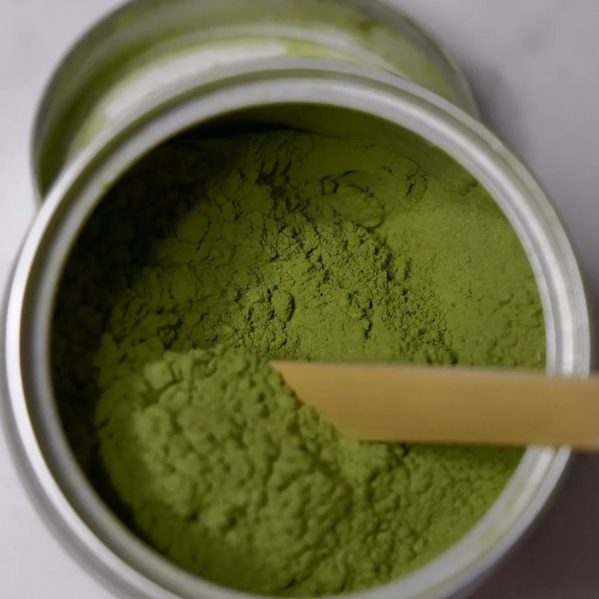
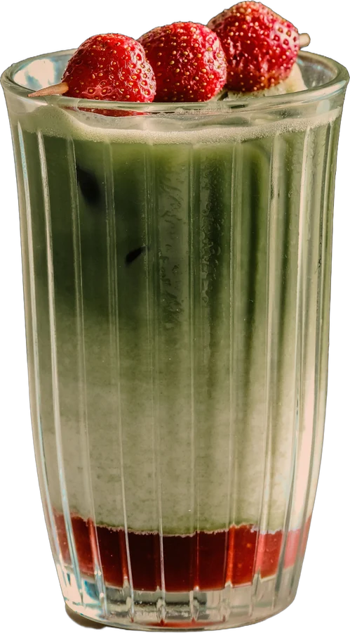
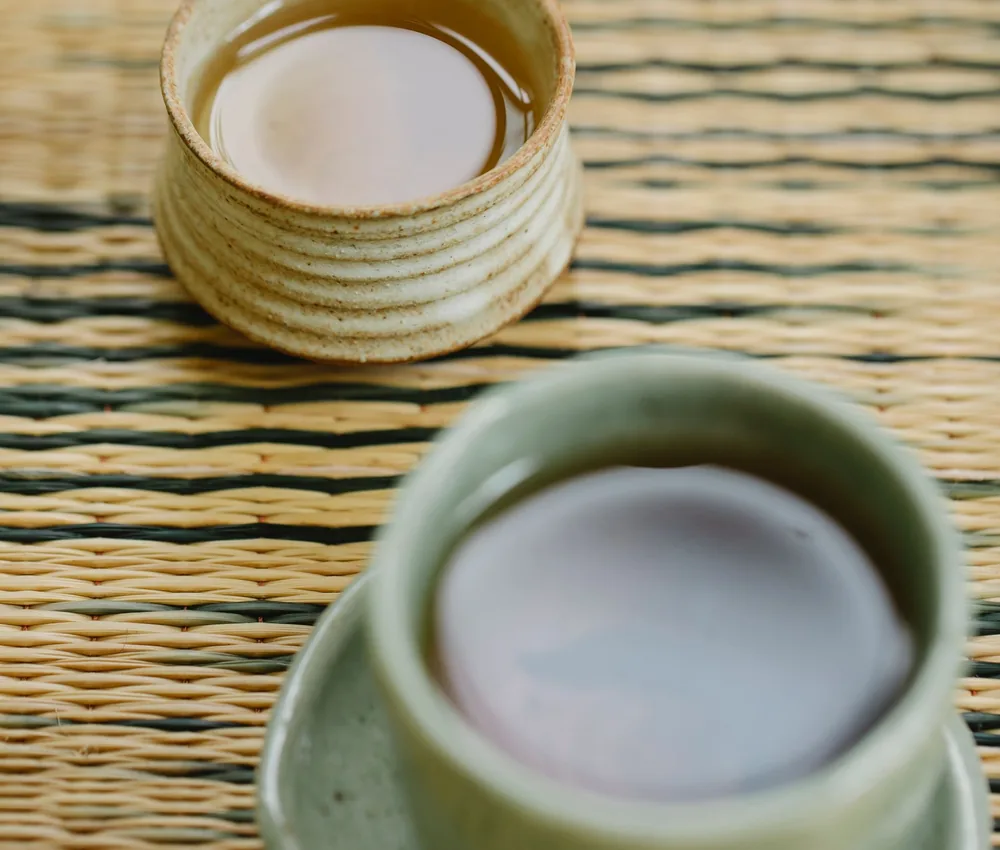
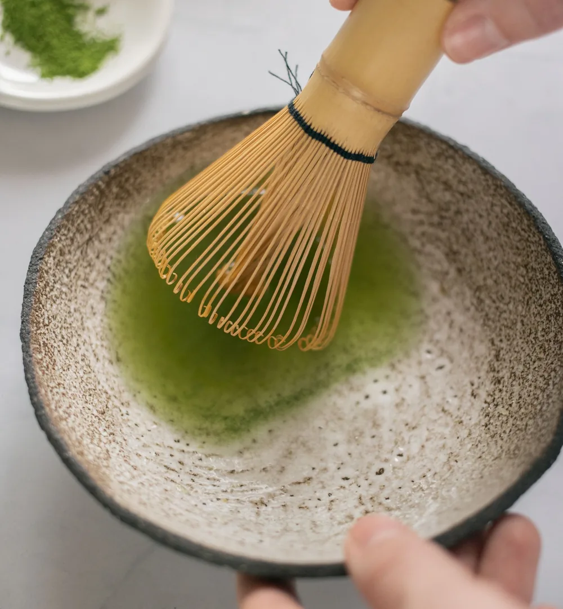
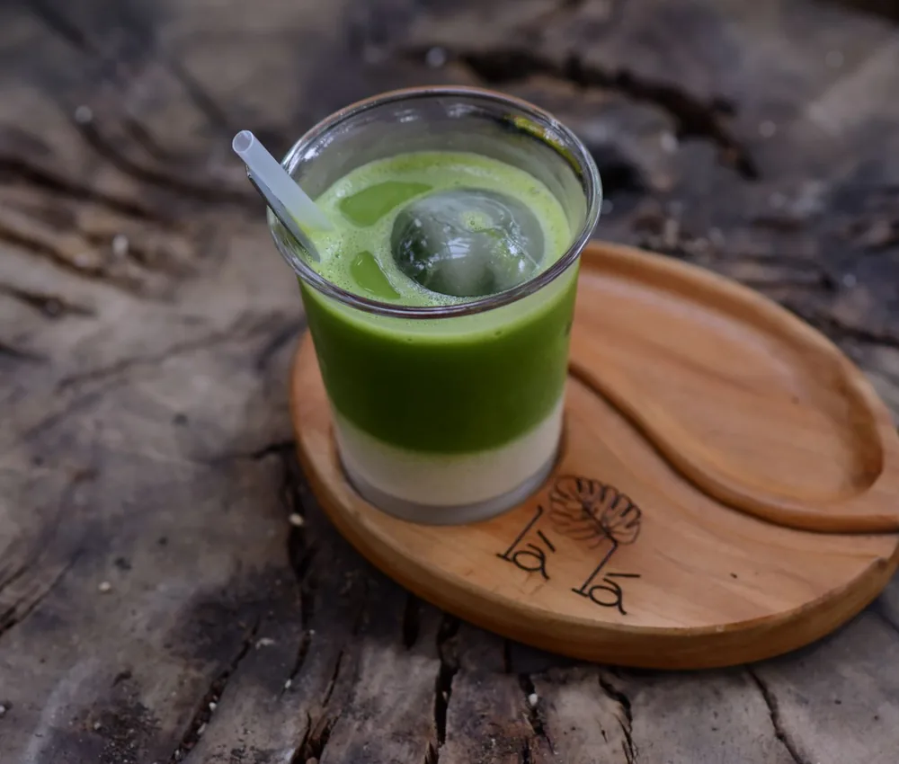

Sift
Sift 2 g (one bamboo scoop) into a warm bowl so there are no lumps.
Home / Recipes
Make Koya at home. Simple recipes and a brewing guide, tested in our Lahore kitchen.

All you need is a tin of ceremonial matcha, a bamboo whisk, a bowl and water just off the boil.

Sift 2 g (one bamboo scoop) into a warm bowl so there are no lumps.

Add 70 ml of water at 70 to 80°C. Boiling water makes it bitter.

Whisk fast in a W shape for 20 seconds until a fine foam forms.

Drink it straight, or pour over cold milk and ice for a latte.